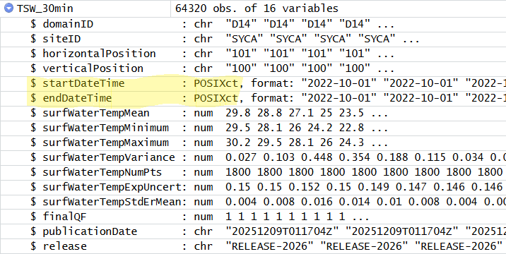

Have you ever completed a complicated series of steps in an analysis only to discover that some small part of your initial data were incorrect? Oh no! Hours wasted… but not if your analyses were written in computer code that could be run on the new data with the click of a button.
A critical step in the scientific process is to update our models when new data become available- whether those data are corrections to prior mistakes or genuinely new information that we can used to make better predictions. Re-useable computer code is critical for automating this process and the workhorse of computer programming is the function.
In this lesson, we’ll learn how to write a function so that we can repeat several operations with a single command.
In this lesson learners will:
Before beginning this lesson you should have completed the lesson Data structures and operations and any prerequisites therein.
Before you begin:
Try to solve the problem by writing R code into your script. Check your answer by clicking:
Just like in mathematics, functions take an input and convert that input into a different output. In programming, we use functions because they can gather a sequence of operations into a whole, preserving it for ongoing use. Functions provide:
Functions are always followed by parentheses that enclose their arguments:
function_name(argument1, argument2)
You have already met several functions in R. Do you remember what each of these functions do?
sum(1:6)
mean(1:10)
c(2, 4, 6)
seq(2, 10, by = 2)
tempdata <- read.csv("data/NEON_water/watertemp_30min_TECR_2021-04_2021-10.csv")
rm(tempdata)Some functions will return a value or object that is either printed to the console or can be saved to a new object. Other functions perform a set of operations without returning any values or objects.
Which of the functions above return an object? What type of object is returned?
[1] 21[1] 5.5[1] 2 4 6[1] 2 4 6 8 10The help page of a function tells us what type of object a function
should return and the names of the arguments it accepts. Let’s read the
help file for read.csv().
The Description field tells us that we should expect this function to
create a data frame. In the Usage section we see several related
functions for reading tabular data files. The most general version of
this function is read.table(). The read.csv
function can actually accept all of the same arguments as
read.table() (because of the ...). From this
documentation page, we see that read.csv() is actually a
shorthand for read.table() with a few different
default values for arguments. Specifically:
| argument | read.table() |
read.csv() |
|---|---|---|
header |
FALSE |
TRUE |
sep |
"" |
"," |
quote |
"\"'" |
"\"" |
fill |
!blanklinesskip |
TRUE |
comment.char |
"#" |
"" |
Farther down in the documentation, each of these arguments is
described in detail. For example, the quote argument
defines which quotation characters are used to denote text. For
read.table(), both " and ' are
allowed, whereas for read.csv() only " is
used. (The \ character is used to “escape” the usual
meaning of the " so that the " character
itself can be specified inside a set of quotes: " " ".)
In R, function arguments may be specified in any order, so long as the names of the arguments are used. If the argument names are not used, then the function arguments are assumed to be in the same order as shown on the help page.
Open the help page for the function rep(). And these
this infromation to answer the following:
Use ?rep to open the documentation page.
The rep() function takes several arguments in this
order:
x = the vector of values to
be repeated.times = a vector of integers giving the number of
times to repeat each element of xlength.out = an integer specifying the number of
elements in the vector to be returned.each = an integer specifying the number of times to
repeat each element of x[1] 1 2 3 1 2 3[1] 1 1 2 2 3 3[1] 1 2 3 1Most of R’s functions are vectorized, meaning that the function will operate on each element of a vector and return a new vector of the same length. This makes writing code more concise, easy to read, and less error prone.
You are actually already familiar with this behavior:
[1] 2 4 6 8The multiplication happened to each element of the vector.
We can also add two vectors together:
[1] 7 9 11 13Each element of x was added to its corresponding element
of y:
Logical comparisons and many functions are also vectorized:
[1] FALSE FALSE TRUE TRUE[1] FALSE FALSE FALSE TRUE[1] TRUE TRUE TRUE TRUEMost base functions also operate element-wise on vectors:
[1] 0.0000000 0.6931472 1.0986123 1.3862944Vectorized operations work element-wise on matrices:
[,1] [,2] [,3] [,4]
[1,] -1 -4 -7 -10
[2,] -2 -5 -8 -11
[3,] -3 -6 -9 -12Element-wise vs. matrix multiplication
The operator * gives you element-wise multiplication! To
do real matrix multiplication, we need to use the %*%
operator:
[,1]
[1,] 22
[2,] 26
[3,] 30 [,1]
[1,] 30Given the following matrix:
[,1] [,2] [,3] [,4]
[1,] 1 4 7 10
[2,] 2 5 8 11
[3,] 3 6 9 12Write down what you think will happen when you run:
[,1] [,2] [,3] [,4]
[1,] 1.0000000 0.2500000 0.1428571 0.10000000
[2,] 0.5000000 0.2000000 0.1250000 0.09090909
[3,] 0.3333333 0.1666667 0.1111111 0.08333333 [,1] [,2] [,3] [,4]
[1,] 1 4 7 10
[2,] 0 0 0 0
[3,] -3 -6 -9 -12 [,1] [,2] [,3] [,4]
[1,] TRUE FALSE TRUE FALSE
[2,] FALSE TRUE FALSE TRUE
[3,] TRUE FALSE TRUE FALSEWe’re interested in looking at the sum of the following sequence of fractions:
This would be tedious to type out, and impossible for high values of n. Use vectorization to compute x when n=100.
Operations on vectors of unequal length
Operations can also be performed on vectors of unequal length, through a process known as recycling. This process automatically repeats the smaller vector until it matches the length of the larger vector. R will provide a warning if the larger vector is not a multiple of the smaller vector.
Warning in x + y: longer object length is not a multiple of shorter object
length[1] 2 4 6 5 7 9 8Vector x was recycled to match the length of vector
y
Functions and objects are the the basic building block of most programming languages, Therefore, if you have written a function, you are a computer programmer. Let’s become programmers!
First, make a new directory in your
R-course-NEON-workbook folder to contain final code that
you plan to reuse. Let’s call it src, which stands for
“source”.
Open a new R script file and call it functions.R. Save
this file in the src folder. We will use this script to
save functions that could be useful across several analyses.
The general structure of a function is:
Let’s define a function fahr_to_kelvin() that converts
temperatures from Fahrenheit to Kelvin. Write this function in your
functions.R script.
fahr_to_kelvin <- function(temp) {
# Calculate temp in kelvin
kelvin <- ((temp - 32) * (5 / 9)) + 273.15
# Return the value of kelvin
return(kelvin)
}We define fahr_to_kelvin() by assigning it to the output
of function. The list of argument names are contained
within parentheses. Next, the body of the function–the statements that
are executed when it runs–is contained within curly braces
({}). The statements in the body are indented by two
spaces. This makes the code easier to read but does not affect how the
code operates.
It is useful to think of creating functions like writing a cookbook. First you define the “ingredients” that your function needs. In this case, we only need one ingredient to use our function: “temp”. After we list our ingredients, we then say what we will do with them, in this case, we are taking our ingredient and applying a set of mathematical operators to it.
When we call the function, the values we pass to it are assigned to
the arguments, which become variables inside the body of the function.
We can then manipulate these variables inside the function. Inside the
function, we use a return statement at the end to send a result back to
the environment where the function was called. This
return() function is optional in R (though not in most
other programming languages). R will automatically return the results of
whatever command is executed on the last line of the function.
Which parts of the fahr_to_kelvin() function above are
the function name, arguments, and
body?
Let’s try running our function. Calling our own function is no different from calling any other function:
[1] 273.15[1] 373.15Write a function called kelvin_to_celsius() that takes a
temperature in Kelvin and returns that temperature in Celsius.
Hint: To convert from Kelvin to Celsius you subtract 273.15
What’s going on inside a function?
Functions in R almost always make copies of the data to operate on
inside of a function body. When we modify dat inside the
function we are modifying the copy of dataset supplies as
dat, not the original variable we gave as the first
argument.
This is called “pass-by-value” and it makes writing code much safer: you can always be sure that whatever changes you make within the body of the function, stay inside the body of the function.
Another important concept is scoping: any variables (or functions!)
you create or modify inside the body of a function only exist for the
lifetime of the function’s execution. When we call
kelvin_to_celsius(), the variables temp and
celsius only exist inside the body of the function. Even if
we have variables of the same name in our interactive R session, they
are not modified in any way when executing a function.
You can see this by typing celsius into the console:
Error: object 'celsius' not foundWe can also define functions that perform operations on multiple arguments, which are separated by commas. Let’s write a function that returns the upper and lower bounds of uncertainty around a given value.
# A function that returns the lower and upper uncertainty bounds
# around a given values as a 2-column matrix
# Arguments:
# mu = a vector of values around which bounds should be calculated
# sigma = a vector containing the amount of uncertainty (in the same units as mu)
calc_uncertainty <- function(mu, sigma) {
# Calculate the upper bound
upper <- mu + sigma
# Calculate the lower bound
lower <- mu - sigma
# Combine the bounds into a matrix
bounds <- cbind(lower, upper)
# Return the matrix
return(bounds)
}Let’s try out our function:
lower upper
[1,] -2 2 lower upper
[1,] 0.5 1.5
[2,] 1.5 2.5
[3,] 2.5 3.5
[4,] 3.5 4.5
[5,] 4.5 5.5
[6,] 5.5 6.5
[7,] 6.5 7.5
[8,] 7.5 8.5
[9,] 8.5 9.5
[10,] 9.5 10.5 lower upper
[1,] -1 1
[2,] -2 2
[3,] -3 3
[4,] -4 4
[5,] -5 5
[6,] -6 6
[7,] -7 7
[8,] -8 8
[9,] -9 9
[10,] -10 10Modify the calc_uncertainty() function so that it
returns a three-column matrix that includes the central value
(mu) in addition to the upper and lower bounds.
We added mu to the line where we define the
bounds object which is returned:
# A function that returns the lower and upper uncertainty bounds
# around a given values as a 3-column matrix
# Arguments:
# mu = a vector of values around which bounds should be calculated
# sigma = a vector containing the amount of uncertainty (in the same units as mu)
calc_uncertainty <- function(mu, sigma) {
# Calculate the upper bound
upper <- mu + sigma
# Calculate the lower bound
lower <- mu - sigma
# Combine the bounds into a matrix
bounds <- cbind(lower, mu, upper)
# Return the matrix
return(bounds)
}Some functions do not work element-wise on vectors in the way that we
need them to. Consider the calc_uncertainty() function we
wrote. By default it will recycle the mu and
sigma vectors if they are not equal length:
lower mu upper
[1,] 1 1 1
[2,] -8 2 12
[3,] 3 3 3
[4,] -6 4 14The code above alternates applying sigma = 0 and
sigma = 10 to the numbers 1, 2,
3, 4, sequentially. But, what if we actually
wanted each value in the sigma vector to be applied to each
value in the mu vector?
One way to do this is to vectorize the
calc_uncertainty() function along the mu
argument and give it a new function name
(Vcalc_uncertainty()):
Vcalc_uncertainty <- Vectorize(calc_uncertainty, "mu", SIMPLIFY = "array")
Vcalc_uncertainty(mu = 1:4, sigma = c(0, 10)), , 1
lower mu upper
[1,] 1 1 1
[2,] -9 1 11
, , 2
lower mu upper
[1,] 2 2 2
[2,] -8 2 12
, , 3
lower mu upper
[1,] 3 3 3
[2,] -7 3 13
, , 4
lower mu upper
[1,] 4 4 4
[2,] -6 4 14The result is an array with three dimensions. The third dimension has
the same length as the vector we supplied for the argument
mu.
What would the dimensions of the resulting array be if we vectorized
along the sigma argument?
Vcalc_uncertainty <- Vectorize(calc_uncertainty, "sigma", SIMPLIFY = "array")
Vcalc_uncertainty(mu = 1:4, sigma = c(0, 10))The third dimension of the array will have the same length as the
vector we supply for the sigma argument.
, , 1
lower mu upper
[1,] 1 1 1
[2,] 2 2 2
[3,] 3 3 3
[4,] 4 4 4
, , 2
lower mu upper
[1,] -9 1 11
[2,] -8 2 12
[3,] -7 3 13
[4,] -6 4 14The real power of functions comes from mixing, matching and combining them into ever-larger chunks to get the effect we want.
Let’s write a function that will convert from Fahrenheit to Celcius
using the two functions that we already wrote for converting Fahrenheit
to Kelvin (fahr_to_kelvin) and Kelvin to Celsius
(kelvin_to_celcius, see challenge above)
fahr_to_celsius <- function(temp) {
temp_k <- fahr_to_kelvin(temp)
temp_c <- kelvin_to_celsius(temp_k)
return(temp_c)
}Verify that our new function works by calculating the freezing and boiling points of water in Celcius.
Sometimes it is useful to provide default values for some of a functions arguments. These are the values that the function will use if the user does not specify a value for the argument.
For example, look what happens if we call
calc_uncertainty() without specifying
sigma:
Error in calc_uncertainty(0): argument "sigma" is missing, with no defaultLet’s add a default value of 0 for sigma.
# A function that returns the lower and upper uncertainty bounds
# around a given values as a 2-column matrix
# Arguments:
# mu = a vector of values around which bounds should be calculated
# sigma = a vector containing the amount of uncertainty (in the same units as mu)
calc_uncertainty <- function(mu, sigma = 0) {
# Calculate the upper bound
upper <- mu + sigma
# Calculate the lower bound
lower <- mu - sigma
# Combine the bounds into a matrix
bounds <- cbind(lower, upper)
# Return the matrix
return(bounds)
}Now let’s test it:
lower upper
[1,] 1 1
[2,] 2 2
[3,] 3 3
[4,] 4 4
[5,] 5 5Now that we have a final working version of the functions we created, let’s get organized:
Separate functions from analyses
One of the more effective ways to work with R is to start by writing the code you want to run directly in a .R script, and then running the selected lines (either using the keyboard shortcuts in RStudio or clicking the “Run” button) in the interactive R console.
When your project is in its early stages, the initial .R script file usually contains many lines of directly executed code. As it matures, reusable chunks get pulled into their own functions that are saved as separate code scripts. It’s a good idea to separate these code scripts into two separate folders; one to store useful functions that you’ll reuse across analyses and projects, and one to store the functions and analyses that are specific to a particular project.
If you haven’t already done so, create a new R script file in the
src directory of your R-course-NEON-workbook
folder and call it functions.R.
Let’s place the code for the working functions that we have created
in this lesson into this script. The functions you should have are:
fahr_to_kelvin(), kelvin_to_celsius(),
fahr_to_celsius(), calc_uncertainty(). Each
function should be preceded by a comment that describes what it does and
what its arguments are.
# A function that converts a vector of temperatures from
# fahrenheit to kelvin
fahr_to_kelvin <- function(temp) {
# Calculate temp in kelvin
kelvin <- ((temp - 32) * (5 / 9)) + 273.15
# Return the value of kelvin
return(kelvin)
}
# A function that converts a vector of temperatures from
# kelvin to celsius
kelvin_to_celsius <- function(temp) {
celsius <- temp - 273.15
return(celsius)
}
# A function that converts a vector of temperatures from
# fahrenheit to celsius
fahr_to_celsius <- function(temp) {
temp_k <- fahr_to_kelvin(temp)
temp_c <- kelvin_to_celsius(temp_k)
return(temp_c)
}
# A function that returns the lower and upper uncertainty bounds
# around a given values as a 2-column matrix
# Arguments:
# mu = a vector of values around which bounds should be calculated
# sigma = a vector containing the amount of uncertainty (in the same units as mu)
calc_uncertainty <- function(mu, sigma = 0) {
# Calculate the upper bound
upper <- mu + sigma
# Calculate the lower bound
lower <- mu - sigma
# Combine the bounds into a matrix
bounds <- cbind(lower, upper)
# Return the matrix
return(bounds)
}There shouldn’t be anything else in this script. Save it (and any other open work), then close RStudio.
Open up a new RStudio session in the R-course-NEON-workbook project
using the R-course-NEON-workbook.Rproj file. In this new
session there shouldn’t be anything in the Environment panel.
Let’s load the functions that we just created. To run an R script
without opening it, use the source() command:
Now look in the Environment panel. What do you see?
Each of the functions that were in the functions.R
script we wrote should be available for use!
Congrats! You’ve reached the end of the main lesson. Click on the Synthesis tab at the top to move on to the next stage of this lesson where we will explore functions to interact with NEON data while put what we have learned together into an analysis.
Let’s install the neonUtilities package and learn about
some of its functions. We will be using this package to acquire data
directly from NEON. Type the following in the Console:
Note that you only need to install the package once, but you will
need to use library() to load the package every time you
want to use it in a new R session.
We’re going to download the recent temperature data from the Teakettle Creek site in the Sierra Nevada mountains and the Sycamore Creek site in Arizona.
The function zipsByProduct() from the neonUtilities downloads data from the
NEON Data Repository and saves it in a zipped file on your computer.
At a minimum we must specify a data product ID (dpID
argument), which we can get by browsing the NEON Data
Portal. Data product id numbers all begin with DP1. We must also
specify start and end dates. If we only want certain sites, we need to
specify the four-letter codes that identify each site. If we are
requesting new data that is “provisional” we also need to include the
argument include.provisional = TRUE. Provisional data is
data collected within the current year that may change as additional
quality controls are implemented. Read more about provisional data here.
# Define dates for download
startdate <- "2022-09-01"
enddate <- "2023-08-31"
# Define the sites to download
sites <- c("TECR", "SYCA") # Teakettle Creek and Sycamore Creek
# Define the data product
dpID <- "DP1.20053.001" # Surface water temperature
# Define the directory in which to save the data
# the file path is relative to the working directory
savepath <- "data"
# Download data specified by the arguments above
zipsByProduct(dpID = dpID,
site = sites,
startdate = startdate,
enddate = enddate,
savepath = savepath,
include.provisional = TRUE)You will need to allow the data to download by typing y
in the Console when prompted.
Examine the data that were downloaded by navigating to the folder
data/filesToStack20053. You should see a lot of folders! If
you look closely, each folder is named according to the site and month
of the data within in. If you open a folder you will find several files,
some of which contain data and some of which contain metadata.
Next we need to stack each of these individual files across sites and
months. To do this we use the stackByTable() function from
the neonUtilities package.
# Unzips data and stacks data tables by site
# Saves resulting tables into the savepath directory
stackByTable(filepath = file.path(savepath, "filesToStack20053"))Now examine the the folder data/filesToStack20053. You
should see a new folder named stackedFiles. If you open
this folder you will see several csv files that contain the stacked
data. You would need to read the documentation for this data product to learn what
each contains.
Since these stacked data tables exist on you computer, you DO NOT
need to run zipsByProduct() or stackByTable()
again if you want to work with the same data in a new R session. To
prevent accidentally running these time-intensive functions, you may
want to comment them out by inserting a # in front of these
lines of code.
Let’s load the TSW_30min.csv file, which contains
surface water temperature measurements averaged over 30 minute time
periods. We use the function readTableNEON() which is a
version of read.csv() that uses the metadata files to
correctly read in dates and other columns using the correct data
types.
# Define the location of the data file
data_filename <- "TSW_30min.csv"
data_filepath <- file.path(savepath, "filesToStack20053", "stackedFiles", data_filename)
# Define the location of the metadata file that contains variable names
var_filename <- "variables_20053.csv"
var_filepath <- file.path(savepath, "filesToStack20053", "stackedFiles", var_filename)
# Read in surface water temperature averaged over 30 min periods
TSW_30min <- readTableNEON(dataFile = data_filepath,
varFile = var_filepath)Did you notice that we used another function,
file.path()? This is a useful function that pastes together
folder names to create a filepath character string:
[1] "folder 1/folder 2/filename.txt"You should now have a new object named TSW_30min in the
Environment panel. It should be a data frame with 16 variables and
64,320 observations.
Let’s take a look at these data:
domainID siteID horizontalPosition verticalPosition startDateTime endDateTime
1 D14 SYCA 101 100 2022-10-01 2022-10-01
2 D14 SYCA 101 100 2022-10-01 2022-10-01
3 D14 SYCA 101 100 2022-10-01 2022-10-01
4 D14 SYCA 101 100 2022-10-01 2022-10-01
5 D14 SYCA 101 100 2022-10-01 2022-10-01
6 D14 SYCA 101 100 2022-10-01 2022-10-01
surfWaterTempMean surfWaterTempMinimum surfWaterTempMaximum
1 29.840 29.517 30.183
2 28.769 28.086 29.547
3 27.132 26.000 28.118
4 24.960 24.151 25.997
5 23.525 22.815 24.307
6 22.110 21.420 22.826
surfWaterTempVariance surfWaterTempNumPts surfWaterTempExpUncert
1 0.027 1800 0.150
2 0.103 1800 0.150
3 0.448 1800 0.152
4 0.354 1800 0.150
5 0.188 1800 0.149
6 0.115 1800 0.147
surfWaterTempStdErMean finalQF publicationDate release
1 0.004 1 20251209T011704Z RELEASE-2026
2 0.008 1 20251209T011704Z RELEASE-2026
3 0.016 1 20251209T011704Z RELEASE-2026
4 0.014 1 20251209T011704Z RELEASE-2026
5 0.010 1 20251209T011704Z RELEASE-2026
6 0.008 1 20251209T011704Z RELEASE-2026It appears that each row corresponds to a temperature average between
two time points (startDateTime and
endDateTime) taken by a sensor at a particular location
(given by the horizontal and vertical positions). From the
documentation, we can learn that for these stream sites, there are two
sensor locations- one upstream (horizontalPosition = 101 or
111) and one downstream (horizontalPosition = 102 or 112).
There should not be any variation in the vertical position for surface
water measurements. We can verify this by tabulating the data:
# How many unique values of horizontal and vertical position are there?
table(TSW_30min$horizontalPosition)
101 102
32160 32160
100
64320 Use the table() function to determine how many
measurements there are in these data from each NEON site.
The actual temperature values are in the surfwaterTemp
columns in degrees Celsius. Mean, minimum, and maximum values during
each time period are provided. The data also include a
finalQF column which is a “quality flag” that indicates
whether the data should be used. A value of 0 in this
column show that the data passed all quality control procedures.
Our goal is to write a function that will calculate the average
monthly surface water temperature across both sensors at a particular
site in a given month. We also want our function to screen out any
erroneous data (indicated by the finalQF column) and to be
able to handle missing data appropriately.
When starting a programming project, the first step is to use comments to outline what we are trying to accomplish. This may change as we work, but it can help to get a “road map” in a script first. Since we are writing a function, know that it will need a name, body and arguments, which we can put into this initial outline.
# A function that calculates average monthly surface water temperature
# across both sensors at a NEON site from a dataframe of temperature
# measurements.
# Arguments:
# dat = a dataframe containing the columns we need
# site = the NEON site code for the site of interest
# month = the month to calculate average temperature over
# na.rm = indicates whether NA values should be removed prior to calculation
calc_monthly_avg <- function(dat, site, month, na.rm) {
# Remove data that did not pass quality control
# keep finalQF == 0
# Subset the data frame to only contain observations from site
# Subset the data frame to only contain observations from month
# Calculate the average of the surfWaterTempMean column
# Return the calculated value
}Now let’s start filling in the outline. You may want to revisit the
Data structures and operations
lesson to recall how to subset rows of a data frame based on values in
its columns. We will use that to subset dat to only contain
rows where the finalQF value is 0 and where
the siteID column matches the value in the
site argument.
calc_monthly_avg <- function(dat, site, month, na.rm) {
# Remove data that did not pass quality control
# keep finalQF == 0
keep_dat <- subset(dat, finalQF == 0)
# Subset the data frame to only contain observations from site
keep_dat <- subset(keep_dat, siteID == site)
# Subset the data frame to only contain observations from month
# Calculate the average of the surfWaterTempMean column
# Return the calculated value
}Note that as we progress through the function, the number of rows in
keep_dat will keep decreasing because we are reassigning
keep_dat back to itself after each subseting operation.
How can we check whether the function is working so far? What happens
if try running it now? Run the code above so that
calc_monthly_avg appears in the Environment tab. Then try
running the following:
It looks like so far the function is subsetting
TSW_30min so that it only contains data from site
TECR and where the finalQF flag is
0. We can verify this by tabulating the data:
TECR
16362
0
16362 Great, but how can we keep making sure that our function is doing what it is supposed to do as we build it? The process of checking our work is called debugging. In the code above, we did this by running the code for the incomplete function and then trying it out by defining specific arguments.
Let’s keep building our function. The next step is to determine the
month when each observation was collected. The columns that report the
time period over which data were averaged are startDateTime
and endDateTime. Click on the blue triangle next to
TSW_30min in the Environment tab. You should see this:

Notice that the type of data stored in the startDateTime
and endDateTime columns is already in a date-time format.
This is because we used readTableNEON() to load the data
with a file that told R the types of variables in each column.
Recall that the lubridate package contains useful
functions for working with dates and times (see Intro to R and RStudio). Since the columns
are already in the correct format, we can use the month()
function to extract a numeric month.
However, we want our function to work even if the user hasn’t loaded
the lubridate package. In R, you can use a function from a
package without loading the package first if you specify the name of the
package before the name of the function as follows:
lubridate::month(). Then, so long as the user has the
lubridate package installed, they can use our function.
Here’s our function so far:
calc_monthly_avg <- function(dat, site, month, na.rm) {
# Remove data that did not pass quality control
# keep finalQF == 0
keep_dat <- subset(dat, finalQF == 0)
# Subset the data frame to only contain observations from site
keep_dat <- subset(keep_dat, siteID == site)
# Subset the data frame to only contain observations from month
# extract month as a numeric value
keep_dat$startMonth <- lubridate::month(keep_dat$startDateTime)
# subset based on month
keep_dat <- subset(keep_dat, startMonth == month)
# Calculate the average of the surfWaterTempMean column
# Return the calculated value
}Debug our function and make sure it is running correctly so far.
test <- calc_monthly_avg(dat = TSW_30min,
site = "TECR",
month = 8,
na.rm = TRUE
)
# Count how many observations in the resulting test data
# come from each site
table(test$siteID)
TECR
819 # Count how many observations in the resulting test data
# have each quality flag value
table(test$finalQF)
0
819 # Count how many observations in the resulting test data
# come from each month
table(lubridate::month(test$startDateTime))
8
819 The last step is to calculate the average of the column in
keep_dat that contains the mean surface water temperature
measurements. We will do this using the mean() function and
specify that the na.rm argument should take on the value
specified in na.rm.
calc_monthly_avg <- function(dat, site, month, na.rm) {
# Remove data that did not pass quality control
# keep finalQF == 0
keep_dat <- subset(dat, finalQF == 0)
# Subset the data frame to only contain observations from site
keep_dat <- subset(keep_dat, siteID == site)
# Subset the data frame to only contain observations from month
# extract month as a numeric value
keep_dat$startMonth <- lubridate::month(keep_dat$startDateTime)
# subset based on month
keep_dat <- subset(keep_dat, startMonth == month)
# Calculate the average of the surfWaterTempMean column
# use the na.rm value provided by the user of the function
vals <- mean(keep_dat$surfWaterTempMean, na.rm = na.rm)
# Return the calculated value
return(vals)
}Let’s try out the function:
# Calculate monthly mean water temperature at Sycamore Creek in August
calc_monthly_avg(TSW_30min, site = "SYCA", month = 8)Error in calc_monthly_avg(TSW_30min, site = "SYCA", month = 8): argument "na.rm" is missing, with no defaultOops! Why are we getting this error message? If we read carefully we
can see that we failed to specify a value for the na.rm
argument. Perhaps it would be a good idea to give the function a default
value for this argument so that we can use it without specifying
na.rm every time.
Modify the calc_monthly_avg() function so the default
value of na.rm is TRUE.
We only need to change the first line where the arguments are defined.
calc_monthly_avg <- function(dat, site, month, na.rm = TRUE) {
# Remove data that did not pass quality control
# keep finalQF == 0
keep_dat <- subset(dat, finalQF == 0)
# Subset the data frame to only contain observations from site
keep_dat <- subset(keep_dat, siteID == site)
# Subset the data frame to only contain observations from month
# extract month as a numeric value
keep_dat$startMonth <- lubridate::month(keep_dat$startDateTime)
# subset based on month
keep_dat <- subset(keep_dat, startMonth == month)
# Calculate the average of the surfWaterTempMean column
# use the na.rm value provided by the user of the function
vals <- mean(keep_dat$surfWaterTempMean, na.rm = na.rm)
# Return the calculated value
return(vals)
}Our final function assumes that dat has very specific
column names and it would be a good idea to specify the columns we used
in the documentation comment at the top of the function.
Which column names must be present in the dataframe passed to
dat in order for the function to work correctly?
Write a comment at the top of the function that describes the columns
names required by this function in the documentation of the
dat argument.
dat must contain columns named: finalQF,
siteID, startDateTime and
surfWaterTempMean.
In informative comment for this function could look like:
# A function that calculates average monthly surface water temperature
# across both sensors at a NEON site from a dataframe of temperature
# measurements.
# Arguments:
# dat = a dataframe containing the columns:
# surfWaterTempMean, startDateTime, siteID, finalQF
# site = the NEON site code for the site of interest
# month = the month to calculate average temperature over
# na.rm = indicates whether NA values should be removed prior to calculationCopy this comment into your own code, if you have not already written your own version.
Copy the complete calc_monthly_avg() function code into
the functions.R file.
# A function that calculates average monthly surface water temperature
# across both sensors at a NEON site from a dataframe of temperature
# measurements.
# Arguments:
# dat = a dataframe containing the columns:
# surfWaterTempMean, startDateTime, siteID, finalQF
# site = the NEON site code for the site of interest
# month = the month to calculate average temperature over
# na.rm = indicates whether NA values should be removed prior to calculation
calc_monthly_avg <- function(dat, site, month, na.rm = TRUE) {
# Remove data that did not pass quality control
# keep finalQF == 0
keep_dat <- subset(dat, finalQF == 0)
# Subset the data frame to only contain observations from site
keep_dat <- subset(keep_dat, siteID == site)
# Subset the data frame to only contain observations from month
# extract month as a numeric value
keep_dat$startMonth <- lubridate::month(keep_dat$startDateTime)
# subset based on month
keep_dat <- subset(keep_dat, startMonth == month)
# Calculate the average of the surfWaterTempMean column
# use the na.rm value provided by the user of the function
vals <- mean(keep_dat$surfWaterTempMean, na.rm = na.rm)
# Return the calculated value
return(vals)
}Time to try it out!
[1] 10.78156What if we wanted to calculate the monthly temperature for each month
at TECR?
Warning in startMonth == month: longer object length is not a multiple of
shorter object length[1] 2.955063Hmm… that didn’t work! We wanted 12 separate values and only got one. In fact we got a warning that two vectors are not matching up in length.
The problem is that our function is not vectorized and doesn’t know how to handle multiple months.
Let’s try vectorizing the function across the month
argument.
# Define a new version of the function vectorized along month
calc_monthly_avg_byMonth <- Vectorize(calc_monthly_avg, "month")
calc_monthly_avg_byMonth(dat = TSW_30min,
site = "TECR",
month = 1:12,
na.rm = TRUE) [1] 1.293758 1.014416 1.306604 NaN NaN NaN NaN
[8] 10.781563 NaN 7.956879 1.659248 1.124242Looks like it worked and that we got missing values for months 4, 5, 6, 7 and 9. Perhaps this is because there were no data these months? Let’s check:
# Define a new data frame with just the data from TECR
dat_TECR <- subset(TSW_30min, siteID == "TECR")
# Add a column that identifies the month
dat_TECR$month <- lubridate::month(dat_TECR$startDateTime)
# For each month, count the number of values of surfWaterTempMean
# that were missing or not (is.na == TRUE means missing)
table(dat_TECR$month, is.na(dat_TECR$surfWaterTempMean))
FALSE TRUE
1 2976 0
2 2688 0
3 2206 770
4 0 2880
5 0 2976
6 0 2880
7 0 2976
8 1649 1327
10 2966 10
11 2871 9
12 2975 1Now that you’re officially a programmer, its time to practice your new skills. Click on the Exercises tab at the top to finish this lesson.
Complete each of the following exercises in its own script. You will need to create a new R script for each.
5.1
Create a new version of the calc_monthly_avg() function
which returns values in fahrenheit instead of celsius.
5.2
Modify the calc_monthly_avg() function so that the user
can specify the name of the column that contains the temperatures. For
example- if they want to calculate the monthly average maximum
temperature from the surfWaterTempMaximum column, they
should be able to specify this in an argument.
5.3
Modify your solution to exercise 5.2 so that by default the function
returns the mean of the surfWaterTempMean column.
5.4
Use code from this lesson to write an R script that reads in the data
file “data/NEON_water/watertemp_30min_TECR_2021-04_2021-10.csv”, then
uses the calc_uncertainty() function to calculate upper and
lower bounds around values in the surfWaterTempMean column
based on the surfWaterTempExpUncert column. Your code must
source this function from another file before it is
used.
5.5
Use code from this lesson to write an R script that reads in the data
file “data/NEON_water/watertemp_30min_TECR_2021-04_2021-10.csv”, then
uses the calc_monthly_mean() function to calculate the mean
monthly temperature for each sensor location in July. Your code must
source this function from another file before it is
used.
5.6
Use code from this lesson to write an R script that reads in the data
file “data/NEON_water/watertemp_30min_TECR_2021-04_2021-10.csv”, then
uses the calc_monthly_mean() function to calculate the mean
monthly temperature for each month in this data.
The output of your code must be a data frame with twelve rows and two
columns: month (containing the months 1 - 12) and
surfWaterTemp.mean (containing the monthly mean dissolved
oxygen values). The mean temperature values should only report a missing
value (NA) if there are no data for a given month.
5.7
Modify the calc_monthly_avg() function so that the user
can specify a vector of sites and the function will calculate the
average temperature for each site.
Hint: You can either use Vectorize() on the
calc_monthly_avg() function OR modify the code inside the
function using the %in% operator from the Data structures and operations
lesson.
Test your function using the TSW_30min data we
downloaded in the Synthesis section.
5.8
Write a function that accepts two vectors and calculates the number
of unique elements shared between them. For example if
myfunc() is the name of your function, the following should
work like this:
[1] 1because "A" is the only element shared by both
vectors.
HINT: you will need to use functions from the Data structures and operations lesson.
5.9
In the Data structures and
operations lesson we ended the Synthesis section by matching up
dates when microbial data were collected with time periods for water
quality data. When we finished we were able to match a single row of
microbes to the correct time interval in
surfwater. Now we are going to write code that can match up
all of the rows at once.
exercises/5.9.RThis lesson was adapted from Zimmerman et al. (2019) episodes 2, 9 and 10 by Jes Coyle.
Introduction to Computing in R with NEON